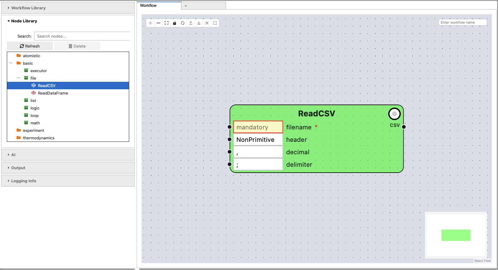
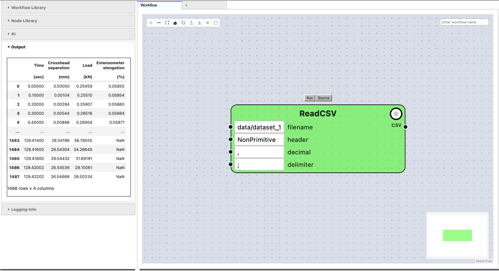
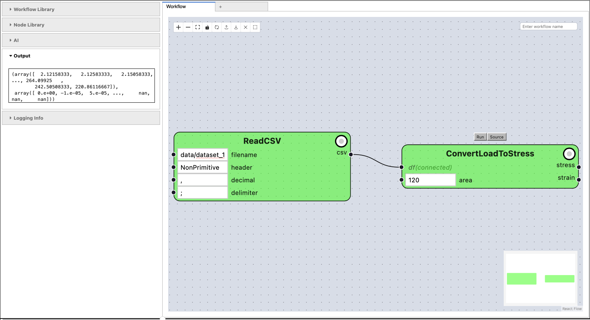
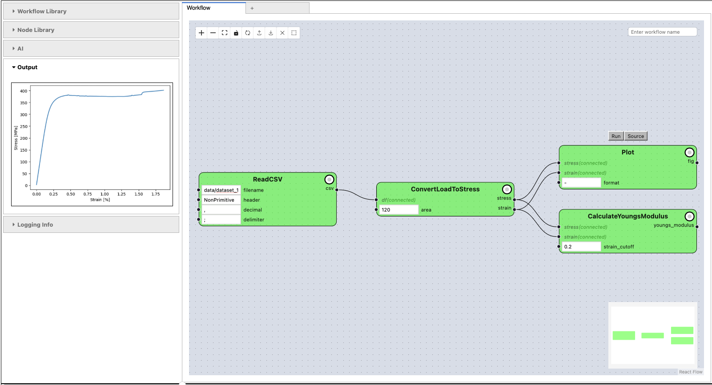

Introduction#
The initial version of pyiron was developed as integrated development environment (IDE) for computational materials science. It combined a Jupyterlab based user interface, with HDF5 based data storage and an interface to high performance computing (HPC) clusters. While this combination was very successful for high-throughput screening on the atomistic scale, it still required the users to learn Python programming. To address this challenge the second version of pyiron introduces a visual programming interface in addition to the Python interface to accelerate the collaboration between expert users and application specialists.
Getting Started#
The goal of this tutorial is to familiarize yourself with the visual programming interface for pyiron. To start the visual programming interface we import pyiron_core and then initialize the PyironFlow class with the and start the graphical interface by adding the extension .gui. The jupyter notebook cells are executed by pressing Shift and Enter at the same time.
from core.gui import PyironFlow
PyironFlow(nodes_path="pyiron_nodes").gui
User Interface#

On the left side of the user interface is a drop-down menu with three categories, namely:
Node Library: The node library contains a list of pre-defined nodes which are the building blocks to develop workflows in pyiron. In the most simple terms a node is a Python function which takes one or more arguments as an input and returns one or more outputs. You can select a node from the node library and by clicking on it it appears on the canvas on the right side.
Output: After evaluation of a node the output of this node is visualized in the output section of the menu on the left side.
Logging Info: In addition, to the output also the log is visible in the left side menu, this is espeically helpful for debugging.
On the right side of the user interface you see a large canvas to construct your workflow.
The canvas is provides multiple tabs to work on multiple workflows at the same time. You can add additional tabs by clicking on the plus sign on the top left of the canvas. Still, for the purpose of this tutorial we just use the first tab.
Below the controls for adding new tabs are a first set of floating controls, with the following functionality:
The + button to zoom in and enlarge the nodes on the workflow canvas.
The - button to zoom out.
The focus button with the four corners which returns the user to the existing workflow. This does not work as long as no node is located on the canvas, but once the first node was placed on the canvas this button adjusts the focus to return to the workflow.
The lock button to lock and unlock the workflow. Once a workflow is locked it can no longer be modified.
The refresh button to reload the workflow. For loading large workflows the canvas might need to be refreshed to visualize all nodes immediately.
The save button with the outgoing arrow to store the workflow on disk.
The load button to reload the workflow from disk. If the workflow was not saved previously this removes all existing nodes from your canvas.
The X button to delete the current workflow from the canvas.
The group button illustrated by a dashed square for grouping nodes.
In the top right corner of the canvas you can name your workflow. Renaming the workflow changes the name of the tab as well as the file the workflow is stored in.
In the bottom right corner there is a mini map of the whole canvas to help navigating the workflow.
Furthermore, once you placed a node on the canvas, there is a node menu on top of the node:
The Run button evaluates the node and returns output to the Output section of the left menu.
The Source button shows the Python source code of the node in the Output section of the left menu.
Finally, at the very bottom towards the left side, there is a white circle indicating a slider. Using this slider you can change the ratio of the left menu and the canvas, corresponding to your screensize.
All components are introduced in more detail in the following.
First Node#
To construct your first workflow place the ReadCSV node on the canvas. It is located in the Node Library under basic and file.
In the mandatory field for filename, which is highlighted with a red frame around it, you can enter
data/dataset_1.csvto load the column separated value (CSV) file nameddataset_1.csvlocated in thedatafolder.Afterwards you can evaluated the node by clicking the Run button in the node menu directly on top of the node. As a result you see the output being visualized on the left side in the Output section of the left side menu.
Furthermore, you can rename the node by clicking on the name ReadCSV and change it to ReadDataset. After renaming the node you can confirm the renaming by pressing enter.
Finally, you can remove an existing node, either by deleting the whole workflow using the X button on the top left corner of the canvas. Or by selecting the node by clicking on it and then pressing the Backspace key on your keyboard.

For advanced users, you can take a look at the Python source code of the ReadCSV node by clicking on the Source button of the node menu on top of the ReadCSV node. The source code is then printed to the Output section of the left side menu.
The source code for the ReadCSV node is:
@as_function_node("csv")
def ReadCSV(filename: str, header: list = [0, 1], decimal: str = ",", delimiter: str = ";"):
import pandas as pd
return pd.read_csv(filename, delimiter=delimiter, header=header, decimal=decimal)
As you can see it is primarily a Python function with the @as_function_node decorator from the pyiron_core package. In addition, the import statement for the pandas package is placed inside the function to separate the namespace and minimize conflicts.
First Workflow#
In the previous step you executed one workflow node, now the next step is combining two workflow nodes to build the first workflow.
Select the ConvertLoadToStress node from the left side menu under Node Library in the module experiment and the sub module youngs_modulus. It is placed right under the ReadCSV node you created previously.
Move the new ConvertLoadToStress node to the right side of the ReadCSV node, leaving a bit of room between them to connect them.
Click on the black dot on the right side of the ReadCSV node next to the letters csv which represents the output channel of this node. By clicking on it the black dot is highlighted in light blue and you can start drawing a connection line from the black dot next to csv on the ReadCSV node to the black dot df on the left side of the ConvertLoadToStress node.
In case you made a wrong connection, then you can click on the black line indicating the connection between two nodes and again delete it by clicking the Backspace key.
For the second mandatory input named area of the ConvertLoadToStress node enter 120.
After both inputs df and area of the ConvertLoadToStress node are successfully connected or filled with manual entries, you can call Run on the ConvertLoadToStress node. This evaluates both the ReadCSV node and the ConvertLoadToStress node and returns the output in the output section of the left side menu.

Young’s Modulus#
In this example, we will use a very common use case in Materials Science, which is to use data from a tensile test to calculate the Young’s modulus.
We start from a datafile in csv format. The file containes data from a tensile test of typical S355 (material number: 1.0577) structural steel (designation of steel according to DIN EN 10025-2:2019). The data were generated in the Bundesanstalt für Materialforschung und -prüfung (BAM) in the framework of the digitization project Innovationplatform MaterialDigital (PMD) which, amongst other activities, aims to store data in a semantically and machine understandable way.
References#
Schilling, M., Glaubitz, S., Matzak, K., Rehmer, B., & Skrotzki, B. (2022). Full dataset of several mechanical tests on an S355 steel sheet as reference data for digital representations (1.0.0) Data set
Let’s start with the visualisation of how such a workflow would look like:

In the tensile test experiment, the force (load) and elongation values are recorded, and saved in a csv file which forms the dataset. We would like to read in this dataset, and convert the load and elongation to stress and strain. Then we plot the results, and calculate a the Young’s modulus, which is the slope of the linear, elastic part of the stress-strain curve. Your calculation could depend on the value of this strain-cutoff that is used, which is something we will explore.
Note
Note that the stress and strain used in this notebook are actually engineering stress and strain
The workflow is created by comining four nodes:
ReadCSV node from the basic module in the Node Library under the sub module file to read a CSV file and convert it to a
pandasDataFrame. In this example we set the filename parameter of the ReadCSV node todata/dataset_1.csvand leave the rest of the parameters with their default values.ConvertLoadToStress node from the experiment module in the Node Library under the sub module youngs_modulus to convert the strain to stress. The ConvertLoadToStress node has to inputs the df input which is connected to the csv output of the ReadCSV node and the area which is set to
120.CalculateYoungsModulus node again from the experiment module in the Node Library under the sub module youngs_modulus to calculate the Young’s modulus by fitting the strain and stress. The strain input and the stress input of the CalculateYoungsModulus are both connected to the strain output and stress output of the ConvertLoadToStress node. The remaining input parameter strain_cutoff can remain at the default value of
0.2.Plot node again from the experiment module in the Node Library under the sub module youngs_modulus to visualize the stress strain dependence in an xy-plot with the x-axis being the strain and the y-axis being the stress. The strain input and the stress input of the Plot node are both connected to the strain output and stress output of the ConvertLoadToStress node. The remaining input parameter format can remain at the default value of
-which refers to a line plot inmatplotlibthe underlying library for the Plot node.
Saving and Loading Workflows#
After the creation of the workflow the workflow can be renamed by typing the name
YoungsModulusas one word without spaces in the text field in the top right corner of the canvas. The name is confirmed by pressing Enter. After renaming the workflow the name of the tab is automatically changed.By pressing the arrow pointing to the top in the menu in the top left corner of the canvas the workflow is saved. The workflow is saved as JSON file in
~/pyiron_core_data/workflows. This JSON format is compatible to the Python Workflow Definition so the same workflow can be used with other workflow engines.After saving the workflow you can clear the canvas by pressing the X button in the menu in the top left corner of the canvas.
To reload the workflow you can now use the button with the arrow pointing downwards. The workflow is reloaded based on the name of the Workflow. So by entering a different name in the top right corner of the canvas you can load a differnt workflow.